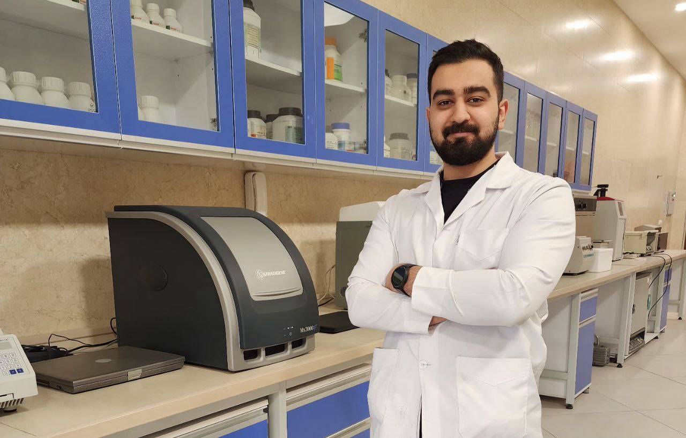
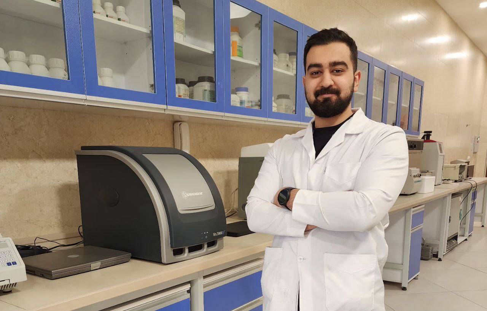

Bit About Me
I am a Medical Doctor and young researcher currently working in an Oncology Clinic, where I assist in oncology patient management and chemotherapy planning. My research is focused on identifying non-coding RNAs as diagnostic and prognostic biomarkers in human tumors. I have extensive experience in cancer biology, molecular genetics, and bioinformatics, including RNA-seq and single-cell analysis. Beyond medicine and research, I am deeply interested in theater and the arts, and I strive to make a meaningful and lasting impact in the lives of cancer patients.
Education
Doctor of Medicine (M.D.)
Mashhad University of Medical Sciences — Mashhad, Iran
2018 – 2025 • GPA: 3.84/4 (18.12/20)
Awards & Achievements
Annual Top Researcher Award
Mashhad University of Medical Sciences
December 2023
Skills & Expertise
Clinical Oncology
Oncology patient management, chemotherapy planning, evidence-based practice.
Cancer Research
Non-coding RNAs, cancer biomarkers, tumor biology, translational research.
Bioinformatics
RNA-seq, single-cell analysis, multi-omics data analysis.
Programming & Tools
R (advanced), Linux, SPSS, statistical data analysis.
Laboratory Techniques
DNA/RNA extraction, PCR, cell culture, Western blot, MTT assay.
Collaboration
Multidisciplinary teamwork, academic collaboration, project management.
Experience
Clinical and research roles across oncology care, molecular genetics, and bioinformatics analysis.
Clinical Experience
Oncologist Assistant
- Oncology patient management
- Treatment planning & prescription
- Evidence-based practice
- Multidisciplinary collaboration
Medical Intern
- Clinical practice and patient care
Research Experience
Undergraduate Research Assistant
- Developed a biobank for colorectal cancer (100 Tumor and Adjacent normal tissues)
- Directing all bulk RNA-seq and Single cell sequencing data analysis projects at MGRC
Post-doctoral Research Fellow
- Systematic Review and Meta Analysis
- Linking the basic science and clinical division
Other Experiences
Theater Director
- Performed 3 theaters as director and 1 theater as an actor
- Developed training management, teamwork, and communication skills
Workout and Fitness Trainer
- Level 3 Certificate in Coaching
Publications
Selected peer-reviewed original articles, reviews, and case reports in cancer biology, non-coding RNAs, and therapy resistance.
Original Articles
- Zohreh Rezaei, Kazem Dastjerdi, Abolghasem Allahyari, Soodabeh ShahidSales, Sahar Talebian, Amirhosein Maharati, Alireza Zangooie, Amir Sadra Zangouei, Farzad Sadri, Saman Sargazi. Plasma microRNA-195, −34c, and −1246 as novel biomarkers for the diagnosis of trastuzumab-resistant HER2-positive breast cancer patients. Toxicology and Applied Pharmacology. IF: 4.4
- Amirhosein Maharati, Negin Taghehchian, Fatemeh Taghavinia, Alireza Golshan, Azadeh Aarabi, Mohammad Reza Abbaszadegan, Meysam Moghbeli. LINC01322 may serve as a potential diagnostic marker for advanced stage tumors in renal cell carcinoma patients eligible for total nephrectomy. Biochemistry and Biophysics Reports. IF: 2.2
- Amirhosein Maharati, Mohammad Javad Malekifar, Abbas Abdollahi, Negin Taghechian, Samaneh Sharif, Azadeh Aarabi, Malihe Lotfi, Mohammad Etezadpour, Mohammadreza Abbaszadegan. CKAP2, miR-941, miR-548 and LINC02577 as biomarkers for early diagnosis in colorectal cancer. Scientific Reports. IF: 3.9
- Amirhosein Maharati, Fatemeh Taghavinia, Alireza Golshan, Tina Azimi Kordiani, Meysam Moghbeli. LINC01913 and LINC01389 as the novel diagnostic tumor markers for the early-stage renal cell carcinoma. Cancer Treatment and Research Communications. IF: 2.9
- Negin Taghehchian, Amirhosein Maharati, Fatemeh Taghavinia, Alireza Golshan, Sepehr Salarzadeh, Meysam Moghbeli. LINC00332 as a potential diagnostic marker for the low-grade tumors in renal cell carcinoma patients. BMC Urology. IF: 1.6
- Mohammad Hossein Khajavirad, Amirhosein Maharati, Negin Taghehchian, Fatemeh Taghavinia, Meysam Moghbeli. Role of VOPP1 in regulation of Paclitaxel response and EMT process during ovarian tumor progression. Molecular Biology Research Communications. IF: 1.75
Review Articles
- Maharati A, Zanguei AS, Khalili-Tanha G, Moghbeli M. MicroRNAs as the critical regulators of tyrosine kinase inhibitors resistance in lung tumor cells. Cell Commun Signal. IF: 8.41
- Maharati A, Moghbeli M. Long non-coding RNAs as the critical regulators of PI3K/AKT, TGF-β, and MAPK signaling pathways during breast tumor progression. J Transl Med. IF: 8.48
- Maharati A, Moghbeli M. PI3K/AKT signaling pathway as a critical regulator of epithelial-mesenchymal transition in colorectal tumor cells. Cell Commun Signal. IF: 8.41
- Maharati A, Samsami Y, Latifi H, Tolue Ghasaban F, Moghbeli M. Role of the long non-coding RNAs in regulation of Gemcitabine response in tumor cells. Cancer Cell Int. IF: 6.4
- Maharati A, Moghbeli M. Forkhead box proteins as the critical regulators of cisplatin response in tumor cells. Eur J Pharmacol. IF: 5.1
- Pooria Salehi-Sangani, Amirhosein Maharati, Bahareh Payami, Mohsen Aliakbarian, Mohammad Reza Abbaszadegan. HypoxamiRs in pancreatic cancer: Master regulators of the hypoxic tumor microenvironment. Cell Biology and Toxicology. IF: 5.9
- Iman Akhlaghipour, Arya Nasimi Shad, Vahid Reza Askari, Amirhosein Maharati, Vafa Baradaran Rahimi. How caffeic acid and its derivatives combat diabetes and its complications: A systematic review. Journal of Functional Foods. IF: 5.2
- Maharati A, Akhlaghipour I, Taghehchian N, Farshchian Yazdi Z, Moghbeli M. Role of microRNA-494 in tumor progression. Am J Transl Res. IF: 3.9
- Amirhosein Maharati, Yasamin Rajabloo, Meysam Moghbeli. Molecular mechanisms of mTOR-mediated cisplatin response in tumor cells. Heliyon. IF: 3.6
- Maharati A, Moghbeli M. Role of microRNAs in regulation of doxorubicin and paclitaxel responses in lung tumor cells. Cell Div. IF: 2.8
- Maharati A, Tolue Ghasaban F, Akhlaghipour I, Taghehchian N, Zangouei AS, Moghbeli M. MicroRNA-495: a therapeutic and diagnostic tumor marker. J Mol Histol. IF: 3.1
- Amirhosein Maharati, Meysam Moghbeli. Role of microRNA-505 during tumor progression and metastasis. Pathology-Research and Practice. IF: 3.2
- Alsadat Mahmoudian R, Amirhosein Maharati, Mahmoudian P, et al. The therapeutic potential value of Cancer-testis antigens in immunotherapy of gastric cancer. Gene. IF: 3.9 co-first author
- Tolue Ghasaban F, Maharati A, Akhlaghipour I, Moghbeli M. MicroRNAs as the critical regulators of autophagy-mediated cisplatin response in tumor cells. Cancer Cell Int. IF: 6.4
- Taghehchian N, Maharati A, Akhlaghipour I, Zangouei AS, Moghbeli M. PRC2 mediated KLF2 down regulation: a therapeutic and diagnostic axis during tumor progression. Cancer Cell Int. IF: 6.4
- Tolue Ghasaban F, Maharati A, Zangouei AS, Zangooie A, Moghbeli M. MicroRNAs as the pivotal regulators of cisplatin resistance in head and neck cancers. Cancer Cell Int. IF: 6.4
- Fanoodi A, Maharati A, Akhlaghipour I, Rahimi HR, Moghbeli M. MicroRNAs as the critical regulators of tumor angiogenesis in liver cancer. Pathol Res Pract. IF: 3.3
- Moghbeli M, Taghehchian N, Akhlaghipour I, Samsami Y, Maharati A. Role of forkhead box proteins in regulation of doxorubicin and paclitaxel responses in tumor cells: A comprehensive review. Int J Biol Macromol. IF: 8.0
- Arya Nasimi Shad, Ali Fanoodi, Amirhosein Maharati, Iman Akhlaghipour, Amir Reza Bina, Ehsan Saburi, Fatemeh Forouzanfar, Meysam Moghbeli. Role of microRNAs in tumor progression by regulation of kinesin motor proteins. Int J Biol Macromol. IF: 8.5
- Taghehchian N, Samsami Y, Maharati A, Zangouei AS, Boroumand-Noughabi S, Moghbeli M. Molecular biology of microRNA-342 during tumor progression and invasion. Pathol Res Pract. IF: 3.3
- Iman Akhlaghipour, Negin Taghehchian, Amir Sadra Zangouei, Amirhosein Maharati, Reihaneh Alsadat Mahmoudian, Ehsan Saburi, Meysam Moghbeli. MicroRNA-377: A therapeutic and diagnostic tumor marker. Int J Biol Macromol. IF: 8.0
- Nasimi Shad A, Fanoodi A, Maharati A, Akhlaghipour I, Moghbeli M. Molecular mechanisms of microRNA-301a during tumor progression and metastasis. Pathol Res Pract. IF: 3.3
- Malihe Lotfi, Amirhosein Maharati, Amir Abbas Hamidi, Negin Taghehchian, Meysam Moghbeli. MicroRNA-532 as a probable diagnostic and therapeutic marker in cancer patients. Mutation Research. IF: 1.9
- Faezeh Tolue Ghasaban, Iman Akhlaghipour, Negin Taghehchian, Amirhosein Maharati, Bahram Memar, Meysam Moghbeli. MicroRNA-185: A non-invasive diagnostic and prognostic tumor marker. Process Biochemistry. IF: 4.8
Case Reports
- Allahyari A, Maharati A, Jafari-Nozad AM, Zangooie A. Prostate cancer, chronic myelogenous leukemia and multiple myeloma in a single patient: a case report and review of the literature. J Med Case Rep. co-responding author
- Alireza Zangooie, Zahra Moradi, Reza Asgari, Amirhosein Maharati, Zahra Salehi, Abolghasem Allahyari. Essential thrombocythemia as an initial presentation of polyneuropathy, organomegaly, endocrinopathy, M-protein, skin changes syndrome with complete response to the bortezomib, cyclophosphamide, dexamethasone regimen: a case report. IF: 0.9
Under Review / Ongoing Projects
- GFPT2 as a critical regulator of CAFs–Tumor interaction in the TME of colorectal cancer (single cell)
- Critical regulators of CAFs–Tumor interaction through PI3K/AKT in the TME of RCC (single cell)
Let's Talk With Me!
Check my Linkedin, Google Scholar and Github pages.